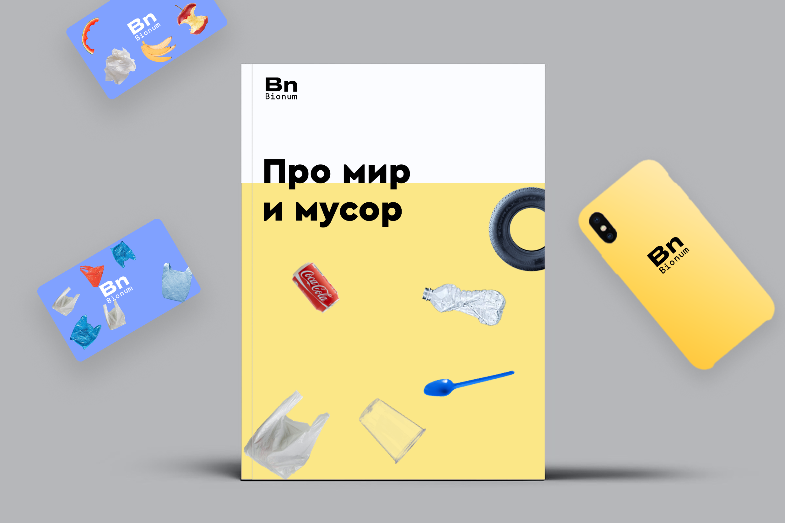
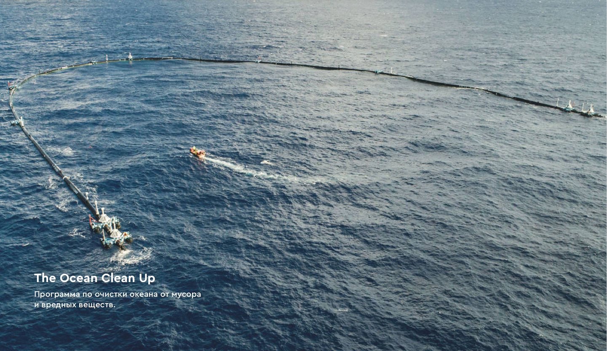
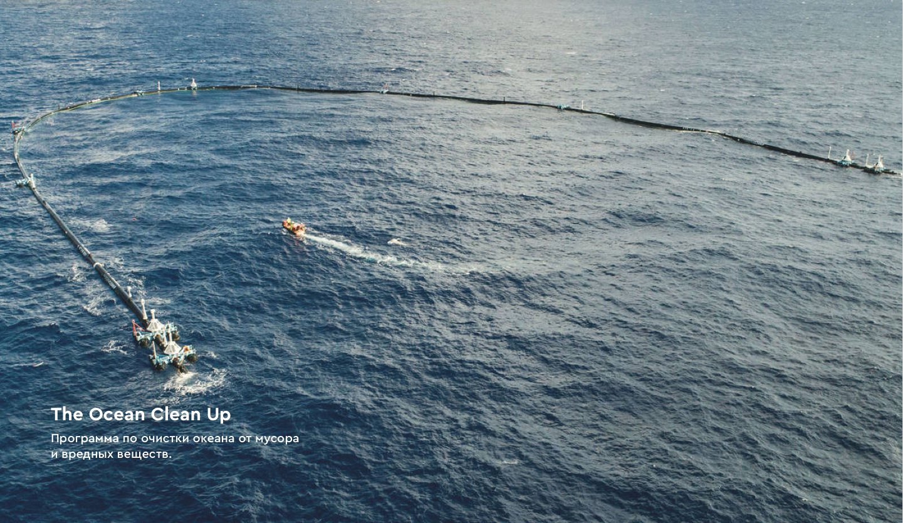
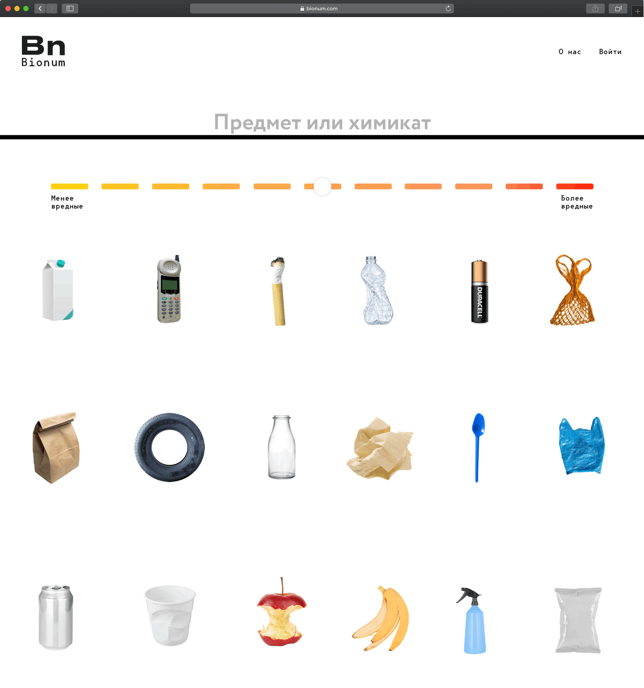

Bionum
Разработка айдентики, логотипа и дизайна сайта.
Бионум — это сервис, который рассказывает про то, как обычные бытовые предметы влияют на природу и на жизнь человека.
Графика
Отличие Бионума от остальных изданий про экологию, это то, что там легко и по-научному рассказывается про влияние предметов на природу. Поэтому в фирменной графике и логотипе отображается слияние научного подхода и веселья. Предметы являются основой графики и хорошо выделяются в контексте всего визуального контента.



Главная страница
На главной странице сразу дается возможность найти любой предмет и почитать про него. Также, важно заинтересовать контентом пользователя и показать статьи про экологию. Поэтому на главной странице выдается интересный контент в фирменном стиле Бионума. Так, люди погружаются в тематику.

 

Статьи
В Бионуме собраны все привычные человеку домашние и бытовые предметы. На каждый предмет пишется отдельная статья, где и рассказывается про его влияние на человека и среду. Любой желающий может добавить новый предмет и написать к нему статью. А редакция все проверит и выложит.
